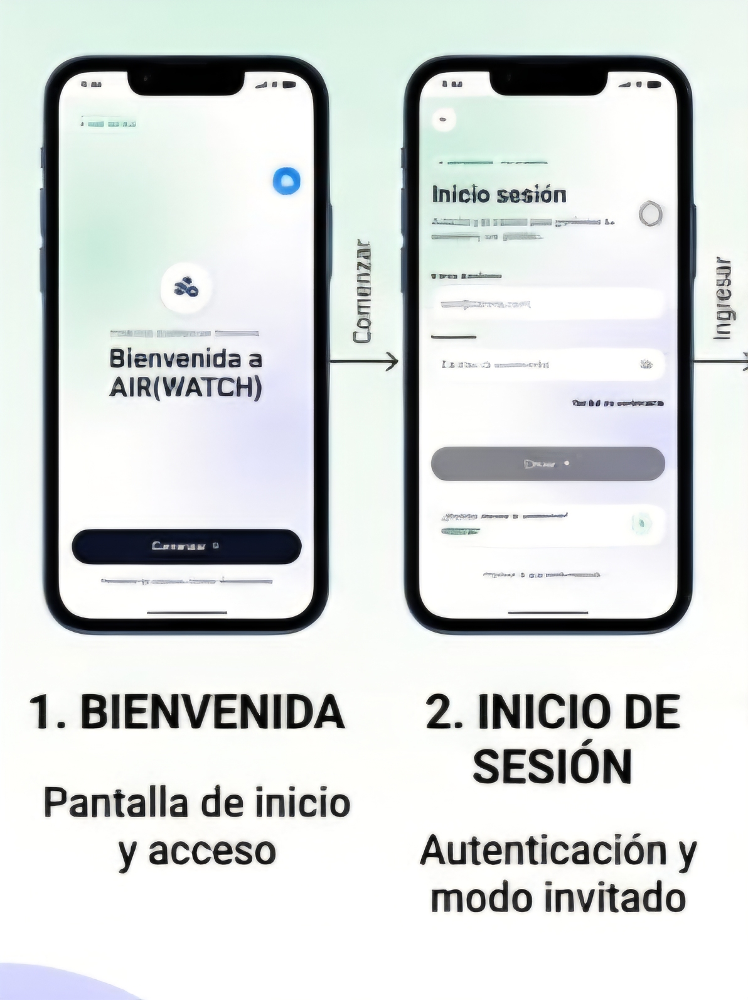
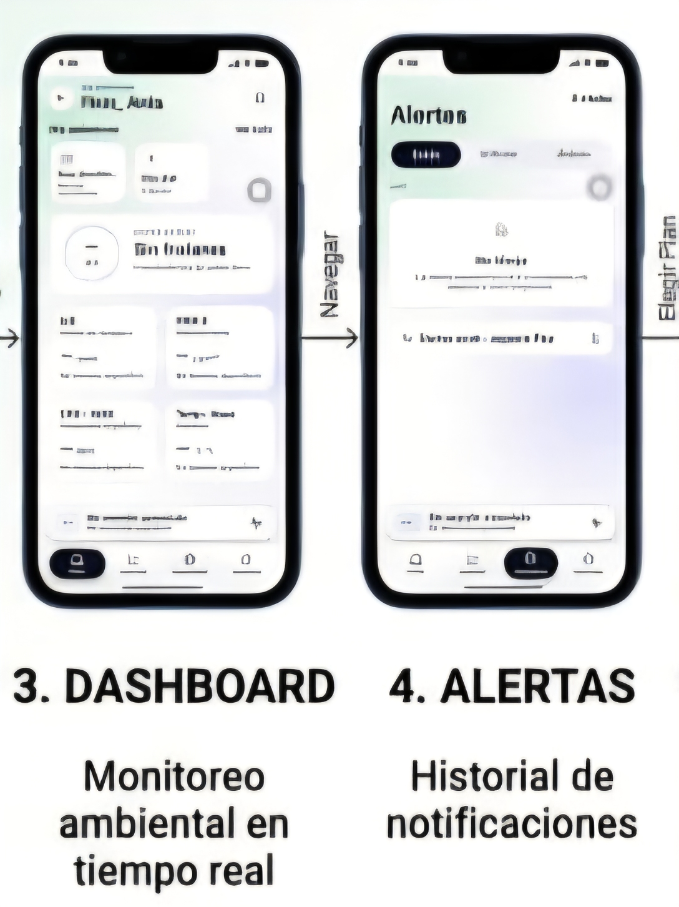
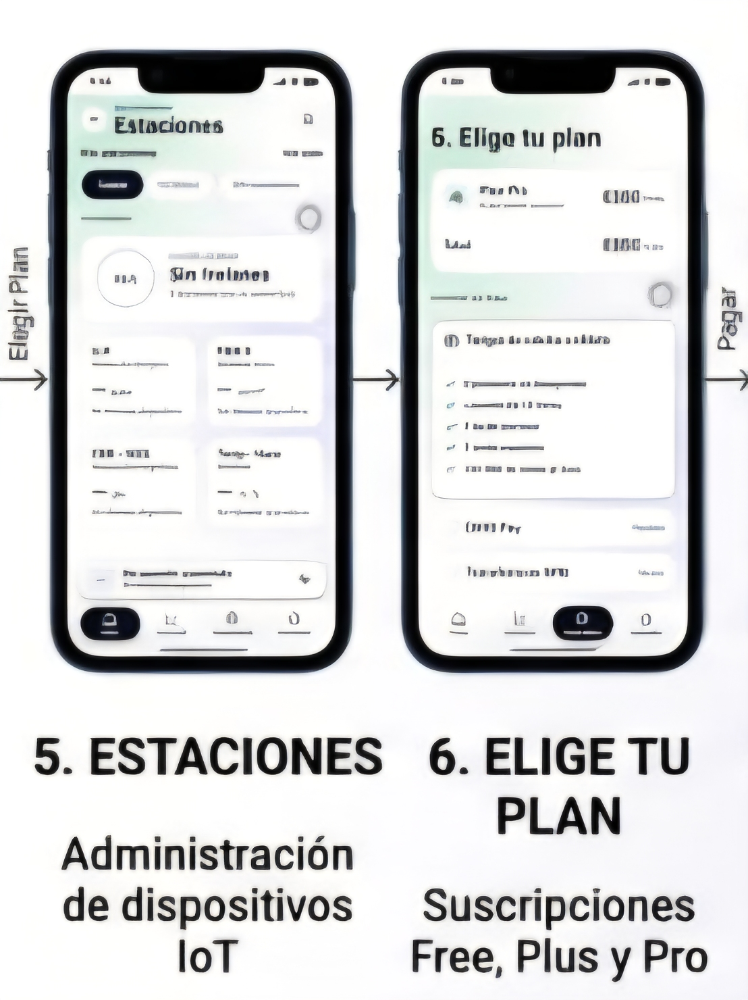
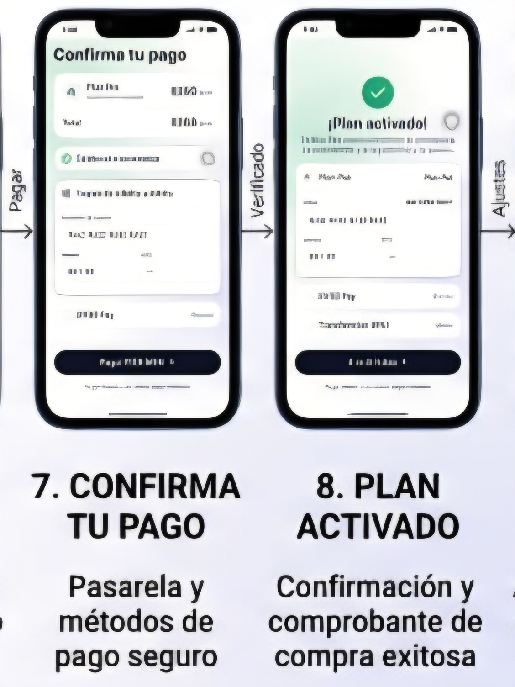
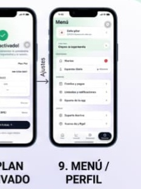
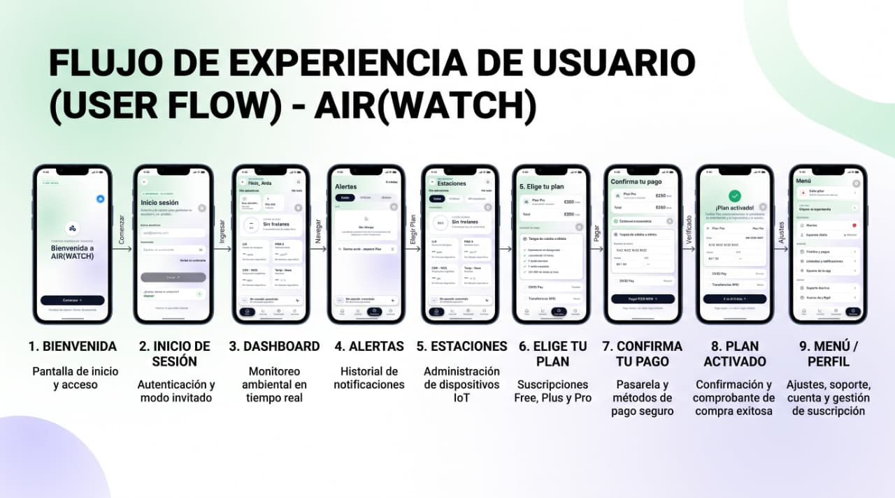

Cuidar tu salud y la de tu familia
Alertas tempranas antes de que los gases invisibles representen un peligro real.
Redes IoT LoRa y NB-IoT para proteger la salud pública en Mixquiahuala, Valle del Mezquital.
Creamos Air Watch con un propósito claro: que nunca tengas que adivinar si el aire que respiras es seguro, dándote avisos claros al instante en tu celular.
Alertas tempranas antes de que los gases invisibles representen un peligro real.
Traducimos lo que pasa en el aire en datos claros y fáciles de entender, sin tecnicismos.
Tecnología confiable, accesible y lista para usar sin complicaciones.
Los cuerpos de agua y zonas industriales liberan gases nocivos sin aviso previo, mientras que los equipos tradicionales son costosos y complejos de operar. Air Watch democratiza el monitoreo ambiental en tiempo real.
Estaciones con batería, panel solar y conectividad celular propia para operar en cualquier ubicación sin depender de luz ni Wi-Fi.
Carcasa sellada preparada para soportar exposición solar, lluvia y gases corrosivos en exteriores.
Análisis continuo segundo a segundo con notificaciones inmediatas y fáciles de interpretar desde el teléfono móvil.
TVOC, eCO₂, MiCS, temperatura y humedad. Envía JSON cada 3 s por LoRa: 915 MHz · SF7 · BW 125 kHz · CR 4/5.
Recibe LoRa (alcance estimado 1–10 km), lee RSSI, muestra datos en OLED y reenvía por UART.
Internet celular · internet.itelcel.com. Publica por MQTT en HiveMQ: puerto 1883 · itics/heltec/datos.
Este navegador no puede reproducir el archivo. Para compatibilidad, usa MP4 con códec H.264.
Clientes, bases de datos y microservicios conectados en tres capas.
Web y aplicación móvil
Catálogo, cotización y panel de monitoreo.
Datos en tiempo real, mapas locales y alertas.
Telemetría y datos transaccionales
Series temporales de telemetría ambiental.
Usuarios, compras e inventario.
Ingesta, seguridad y visualización
Dos normas para proteger la información y conectar la plataforma web, la app móvil, el comercio electrónico y los sensores IoT.
Monitorea el ambiente, recibe alertas y administra tus estaciones desde una sola aplicación.
Consulta las condiciones ambientales en tiempo real.
Recibe avisos oportunos cuando cambia la calidad del aire.
Administra dispositivos IoT y planes desde el teléfono.






Elige el nivel de monitoreo que se adapta a cada sitio.
Air Watch transforma percepciones en datos para proteger la salud y el entorno.
Protección a la Salud Pública: alertas tempranas.
Sustento Jurídico y Normativo: datos verificables para actuar.
Comunidades Sostenibles: información para decidir.
Sesión de Preguntas y Respuestas · ITSOEH
Visita la tienda, cotiza equipos y consulta la App Air Watch.